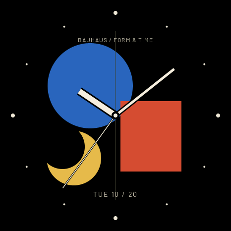
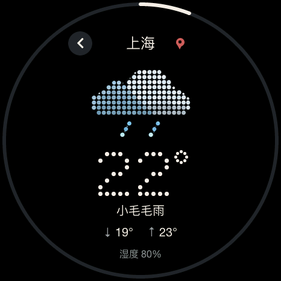
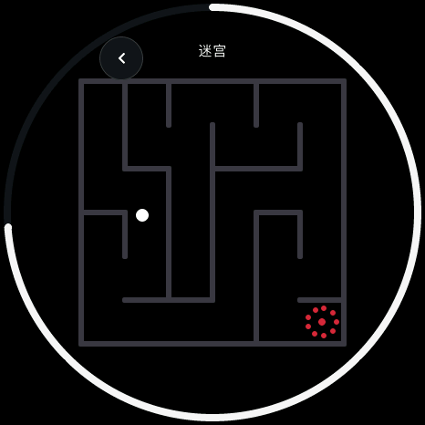

138
个演示场景
24 个应用 · 62 款表盘及子功能



暂停 / 继续 · 左右切换 · 随时退出
从「设置 → 演示模式」进入。
演示使用独立样例，画面持续标记 DEMO。
目前演示目录还不包含小咪与股票。
新增自动演示：让表盘和应用自己轮流登场。
24 个应用 · 62 款表盘及子功能



从「设置 → 演示模式」进入。
演示使用独立样例，画面持续标记 DEMO。
目前演示目录还不包含小咪与股票。